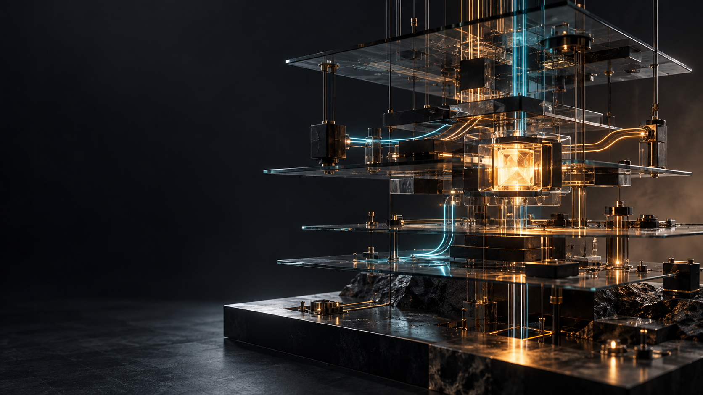
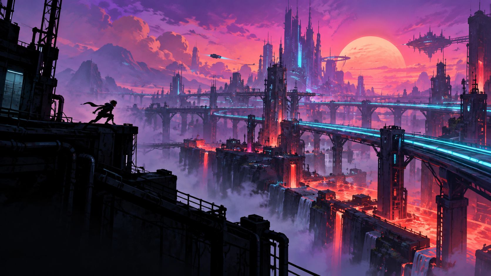

САЙТ СЕРГЕЯ ГОСТОВА / 2026
Один автор.
Три мира.
Новый сайт соединяет работу, игры и рассказы. На первом экране — реальные проекты; в играх — записи процесса и ссылки на запуск. Кейс двух лет геймдизайна вынесен на отдельную страницу.
01 / СИСТЕМЫИНЖЕНЕРИЯ → МИРЫ
Системы
Тёмная, строгая сцена. На первом плане — работающий инструмент и доказательство результата; затем игры и истории.
Смотреть страницу ↗
02 / МИРЫИГРЫ → ТЕХНОЛОГИИ
Миры
Броский игровой вход. Сначала атмосфера и игры, а за ними — реальные продукты и литературные проекты.
Смотреть страницу ↗
 03 / АТЕЛЬЕ
03 / АТЕЛЬЕАВТОР → ПОРТФОЛИО
Ателье
Светлая редакционная подача для автора, у которого рядом живут книги, программы и игры.
Смотреть страницу ↗